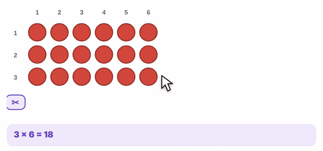

1-minute video · captions on screen
What it is
An array is counters in straight rows, with the same number in every row.
- Multiply: rows × number in each row.
- Turn it: 4 rows of 7 turned sideways is 7 rows of 4. Same total.
- Split it: a hard fact becomes two easy ones. The second color shows the split.
How to use the tool
- Array: set the rows and columns.
- Drag across counters to flip them to yellow.
- Drag the scissors between two columns to split the array.
- Share: drag counters from the pile into the groups. Keep the groups equal. What's left is the remainder.

Try this with your class
23 ÷ 4
- Put 23 counters in the pile and make 4 groups.
- Deal them out one at a time, like cards.
- Each group gets 5. Three are left. Can those 3 be shared fairly? No. 23 ÷ 4 = 5 R 3.
Then ask the reverse: what array would use 20 of those counters? Students see that division and multiplication are the same picture.
Watch for
Rows that aren't equal.An array with a short row isn't an array. Line them up and check.
A remainder that's too big.If 5 are left over with 4 groups, you can share again.
Counting by ones.Fine at first. Then ask: is there a faster way to count?
Try it yourself
Based on: Maths — No Problem, manipulatives for multiplication and division · NCETM, using counters.